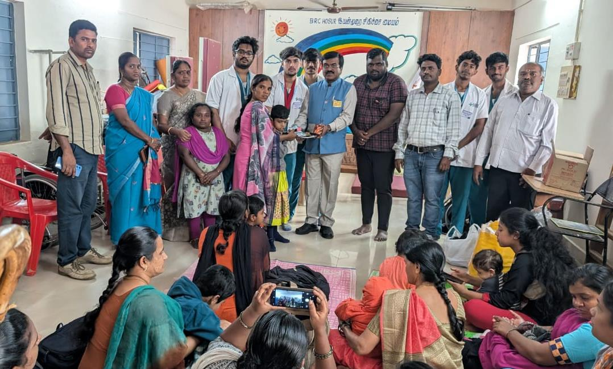
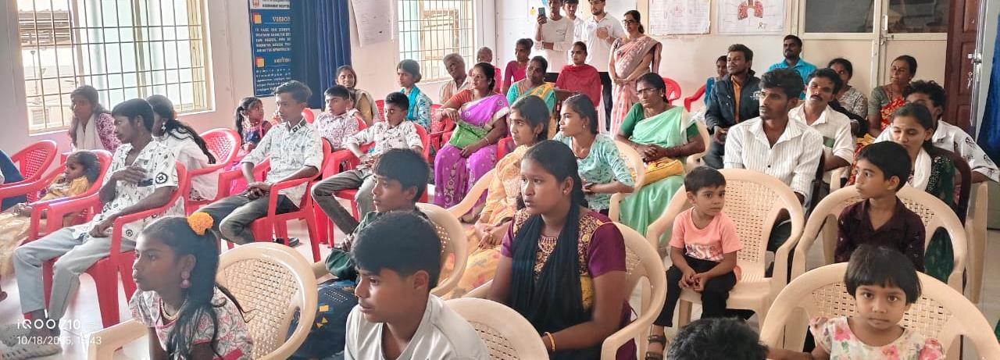
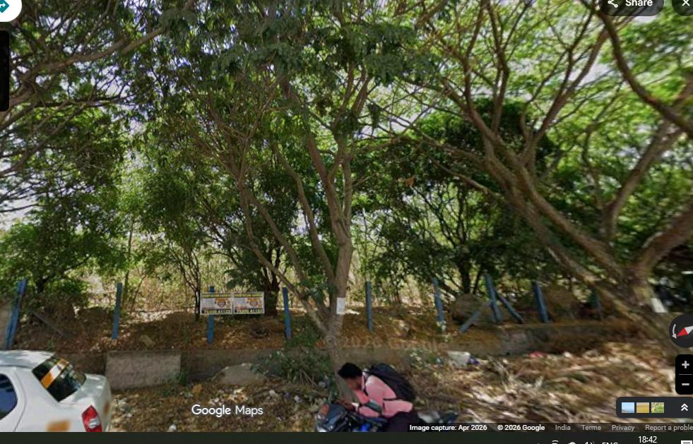
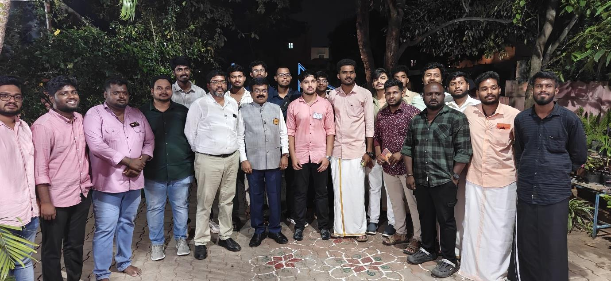

Key Projects 2025-26
Transforming lives through impactful community service

Prosthetic Mobility Mission
A Global Grant project providing prosthetic limbs to 300 beneficiaries, restoring mobility and independence to those in need. Funded through a $30,000 Rotary Global Grant.
Global Grant 300 Beneficiaries
Dialysis Staff Support
Continuously funding dialysis staff salaries at Hosur Government Hospital for 5 years running, along with SBI CSR Dialysis Machine installations and RO Water Plant maintenance.
5 Years Ongoing Govt Hospital
Miyawaki Forest
Planted 12,000 trees using the Miyawaki method at Brindavan Nagar with a 5-year maintenance commitment. A landmark environmental conservation project for the community.
12,000 Trees Environment
Educational Scholarships
Awarded Rs. 2.00 lakhs in scholarships to 6 deserving students pursuing Engineering, Medicine, and Arts degrees, empowering the next generation through education.
Rs. 2 Lakhs 6 Students
Thalir Sanitary Napkin Project
Distributed 3,000 sanitary napkins to women in tribal villages, promoting menstrual hygiene and women's health as a signature community service initiative.
3,000 Napkins Women's Health
Community Outreach
Annapoorna Day provisions to Vinayaga Home for Children, Naturopathy Medical Camp serving 200 patients, Blood Donation Camps, and Farmer Honouring events during Pongal.
200+ Patients Signature Project